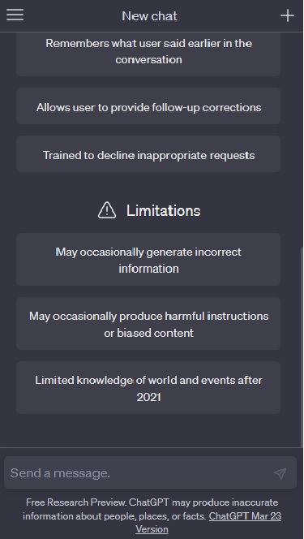
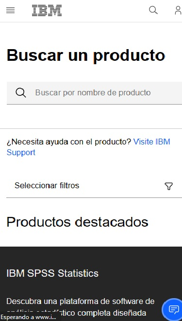
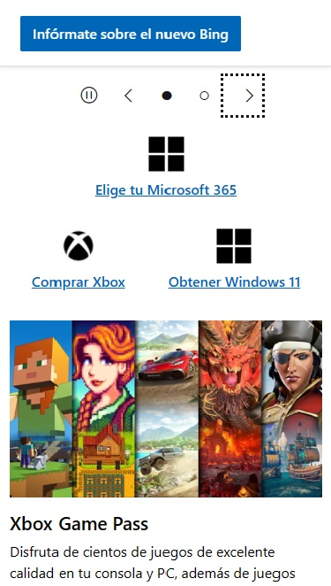

PARC: Repetition
Openai
https://chat.openai.com Regarding repetition in the design of the OpenAI website, it is possible that the principle of repetition was used to create a cohesive and consistent appearance throughout the site. For example, a consistent color scheme, similar fonts, and other visual elements could have been used in different parts of the website. However, I don't have specific information on how repetition was approached in the design of the OpenAI website.
PARC: Contrast
IBM
https://www.ibm.com/ar-es/products Regarding the principle of contrast in the design of the IBM website, it is evident that this principle was utilized to create a visually striking and engaging user experience. The website employs a high contrast color scheme, with bold use of black and white, and accents of blue and yellow to draw the user's attention to specific elements. This contrast is also evident in the use of bold typography, big images, and clear visual hierarchies.
PARC: Alignment
Microsoft
https://www.microsoft.com/es-ar/ Regarding the principle of contrast in the design of the Microsoft website. showcases aligned web development design through the use of consistent grid layouts. This design principles help to create a cohesive and visually appealing user interface. Also, Microsoft's website utilizes responsive design, ensuring that the layout and content adapt seamlessly to different screen sizes.